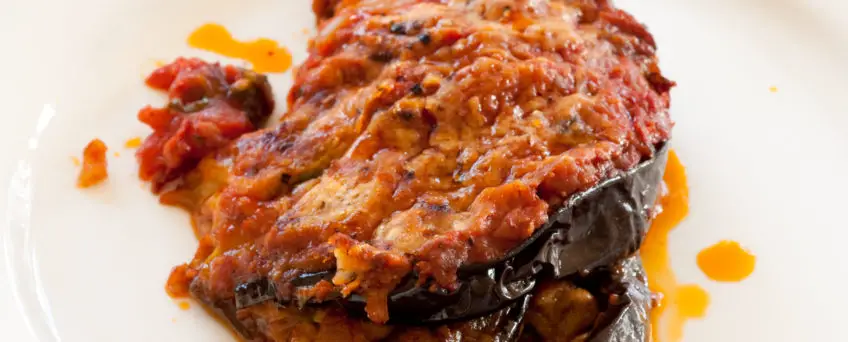

Parmigiana

Description
The queen of single-course meals, the lifter of spirits:
eggplant parmigiana. It’s a recipe shared by regions in
both the north and south of Italy
The name Parmigiana is said to come from the Sicilian
Parmiciana, which in dialect refers to the blinds made up of
wooden slats stacked on one another.
Ingredients
- Eggplants
- Tomato puree
- Fior di latte mozzarella cheese
- Parmigiano Reggiano DOP cheese
- Yellow onions
- Basil
- Extra virgin olive oil
- Black pepper
- Fine salt
- Peanut seed oil
Steps
- Add enough olive oil to a pot to cover the bottom and heat
-
Then add the onion to the pot. Let it brown for a couple of minutes,
stirring often so it doesn't burn, then add the tomato purée
- Season with salt and add the basil leaves
-
Add a little water to the container the tomato purée was in to rinse it,
pouring the water into the pot. Let this cook for 45-50 minutes over low
heat
-
In the meantime, cut the fiordilatte cheese into small cubes, setting
aside one piece that you’ll use at the end
-
Place the cheese cubes to drain in a colander positioned in a bowl
-
then cover with plastic wrap and set aside: This will allow the excess
liquid to drain off
- Now, turn to the eggplant: Wash and trim them
- Cut them lengthwise into slices around 1/4 inch (4-5 mm) thick
-
Once sliced, fry the eggplant in peanut oil that’s been heated to 340°F
(170°C), immersing a few slices at a time
-
As soon as they’ve turned slightly golden, drain on a tray lined with
paper towel
- If you run out of space on the tray, place more paper towel
-
on top of the eggplant that are draining to create another layer with
the newly fried eggplant
-
Lastly, move on to the assembly: Start by adding some of the tomato
sauce to a 9x13-inch (20x30-cm) baking dish
-
Form the first layer by arranging the fried eggplant slices in the dish
- then spooning over more sauce
- spreading it evenly, and sprinkling in cubes of fiordilatte
- Sprinkle with grated Parmigiano Reggiano cheese
- and some basil leaves
- Start a new layer by adding more tomato sauce
-
and fried eggplant slices, which should be arranged facing opposite
directions. Then add more cheese and basil leaves
- Repeat these steps until you reach the last layer of eggplant
-
again adding sauce and the fiordilatte that you set aside, torn into
pieces by hand
- Finish off with grated Parmigiano cheese
-
and bake in a conventional oven preheated to 390°F (200°C) for around 30
minutes
-
When the eggplant parmigiana is finished baking, let it rest for 15-20
minutes before serving